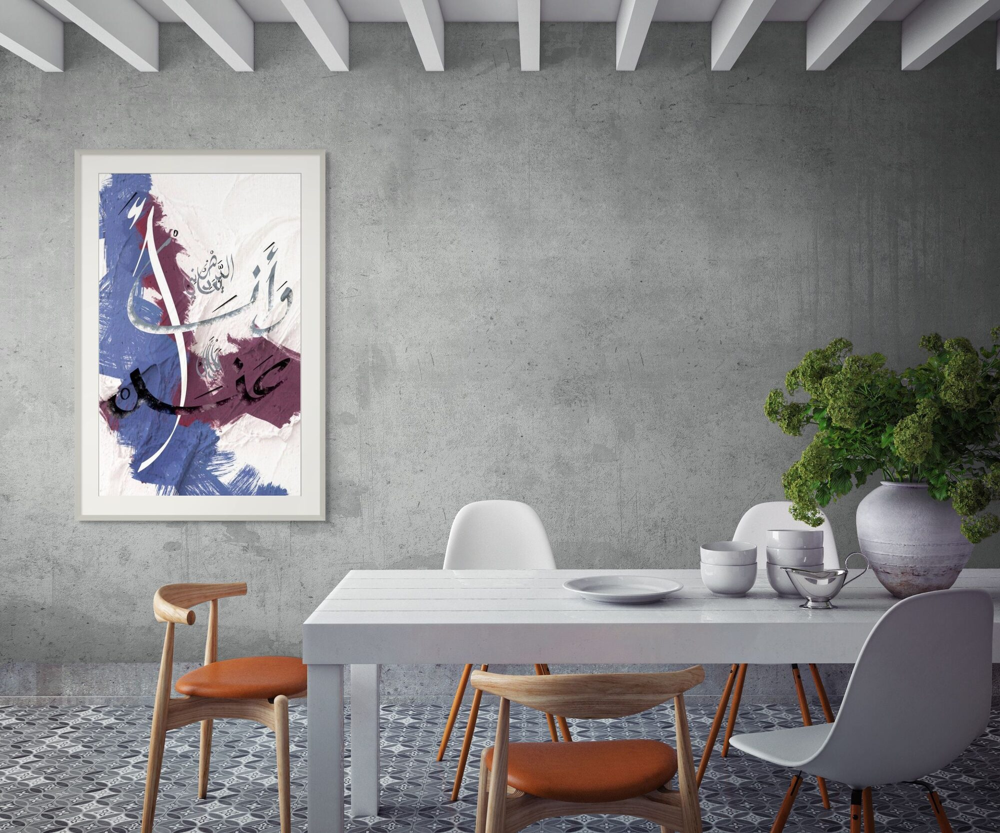

الدهر يعاديني وأنا ما أزال أعندْ
Time is against me — and I am still defiant.
تقاطع طرق · Crossroads

This poem begins in loss and refuses to end there. She moves away — but she remains the only fate he knows. He cannot say whether he will forget her. What he can say, what he knows with absolute certainty, is that time is working against him and he has chosen, stubbornly and without apology, to resist it.
The Arabic word أعند carries something English cannot hold in a single word — it is not just defiance but the specific defiance of someone who knows they are losing and continues anyway. The fighter who will not tap out. The lover who will not let go. The poet who will not stop writing.
The composition makes that refusal visible. Broad brushstrokes in cobalt blue and deep plum collide across a crumpled paper surface — two forces that do not resolve, that do not blend into something harmonious, that simply press against each other with full weight. The script cuts through both, belonging to neither, still moving.
This is not a poem about hope. It is a poem about what you do when hope is not available.



Ask about تقاطع طرق
Editions are small and made after the conversation. Tell me the format you have in mind and the wall it is going to.
Enquire about this work